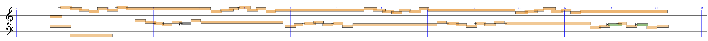
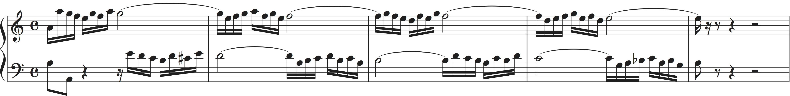
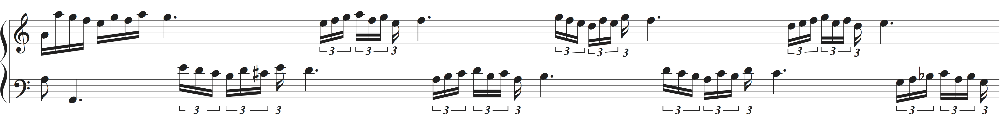
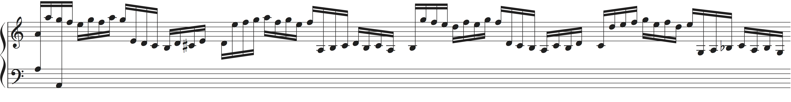
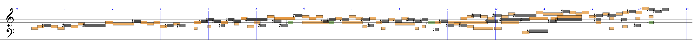
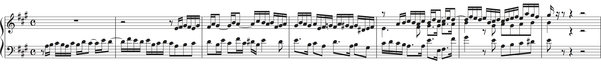

Abstract
A rhythm trancription algorithm converts a MIDI performance to a music score representation. We show results of comparing three HMM-based algorithms; note HMM [1,2], metrical HMM [3,4], and merged-output HMM [5]. As an evaluation measure, we use the rhythm correction cost (RCC), which is defined as the least number of editions to correct a estimated score. For details, see our paper [5].References
[1] T. Otsuki, N. Saitou, M. Nakai, H. Shimodaira, S. Sagayama, "Musical Rhythm Recognition Using Hidden Markov Model (in Japanese),'' J. Information Processing Society of Japan, 43(2), pp. 245-255, 2002.[2] H. Takeda, T. Nishimoto and S. Sagayama, "Rhythm and Tempo Analysis Toward Automatic Music Transcription,'' Proc. ICASSP, vol. 4, pp. 1317-1320, 2007.
[3] C. Raphael, "Automated Rhythm Transcription,'' Proc. ISMIR, pp. 99-107, 2001.
[4] M. Hamanaka, M. Goto, H. Asoh and N. Otsu, "A Learning-Based Quantization: Unsupervised Estimation of the Model Parameters,'' Proc. ICMC, pp. 369-372, 2003.
[5] "Rhythm Transcription of Polyphonic MIDI Performances Based on a Merged-Output HMM for Multiple Voices," submitted to SMC 2016.
Demonstrations
Examples of rhythm transcription are shown. Each algorithm outputs quantised score times of the notes in an input MIDI performance. Score typesetting (e.g. beaming) is done manually to make the results clearer. For the merged-output HMM, the notes are grouped into two voices, which are shown in the upper and lower staves.Good examples
Examples in which the merged-output HMM outperformed other HMMs.Bad examples
Examples in which the merged-output HMM performed worse than other HMMs.Example 1 (Bach: Two-part invention No. 1 C-dur)
・Input performance ( mp3 MIDI )
・Correct transcription (original score) ( mp3 MIDI )
Upper staff: mp3 MIDI
Lower staff: mp3 MIDI
・Result by merged-output HMM ( Upper staff: mp3 MIDI Lower staff: mp3 MIDI ) RCC = 2
・Result by note HMM ( mp3 MIDI ) RCC = 0
・Result by metrical HMM ( mp3 MIDI ) RCC = 0
Example 2 (Bach: The well tempered clavier book II No. 19 A-dur Fugue)
・Input performance ( mp3 MIDI )
・Correct transcription (original score) ( mp3 MIDI )
Upper staff: mp3 MIDI
Lower staff: mp3 MIDI